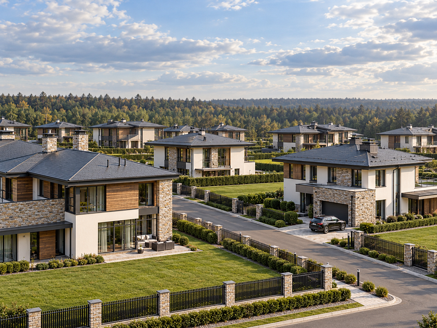
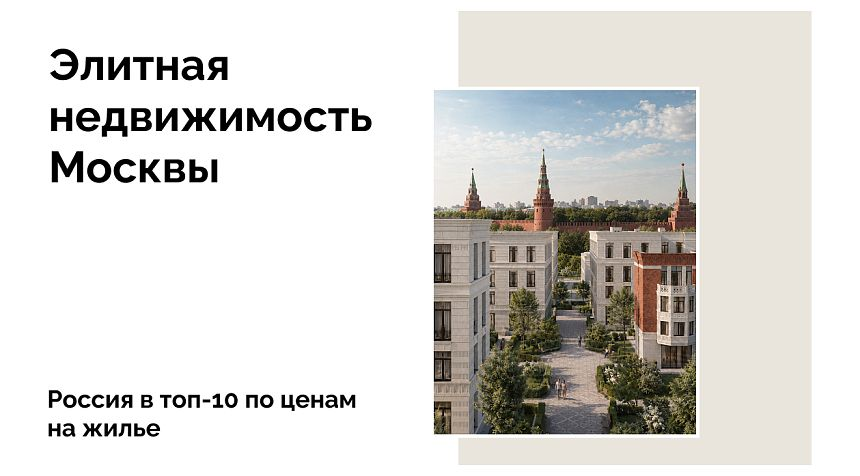
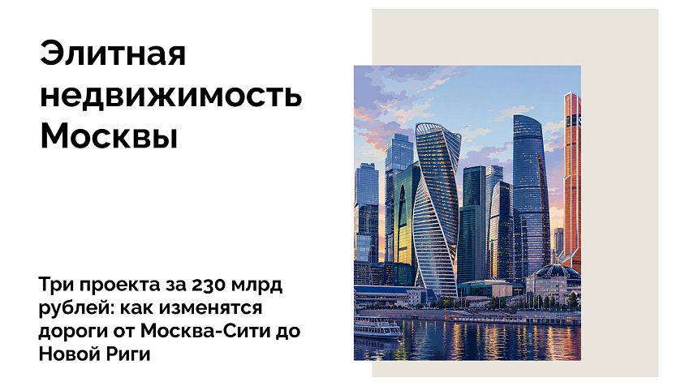
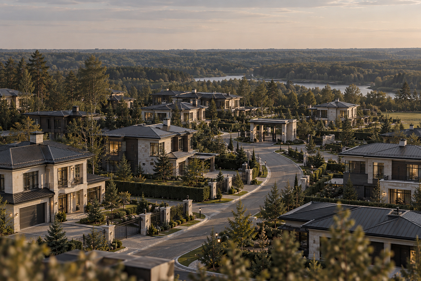
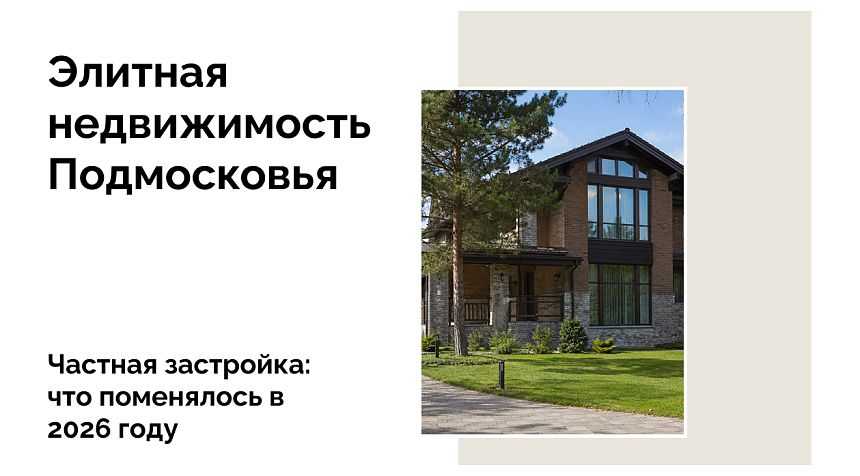
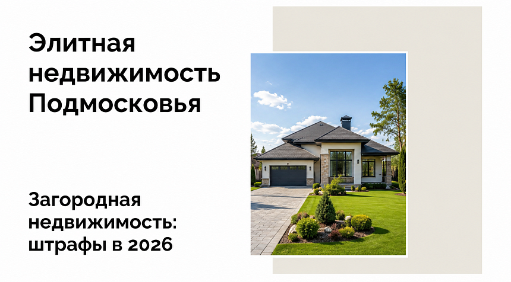

Топ-5 коттеджных поселков для второго дома в Подмосковье
Читать подробнееМедиа BARN Estate

Топ-5 коттеджных поселков для второго дома в Подмосковье
Читать подробнее
Россия вошла в топ-10 стран по росту цен на жилую недвижимость
Читать подробнее
Три проекта за 230 млрд рублей: как изменятся дороги от Москва-Сити до Новой Риги
Читать подробнее
Анализ рынка элитной загородной недвижимости Подмосковья за 2025 год от BARN Estate
Читать подробнее
Новые правила строительства частных домов в Подмосковье в 2026 году
Читать подробнее
За что могут оштрафовать владельцев дач и участков в 2026 году
Читать подробнее